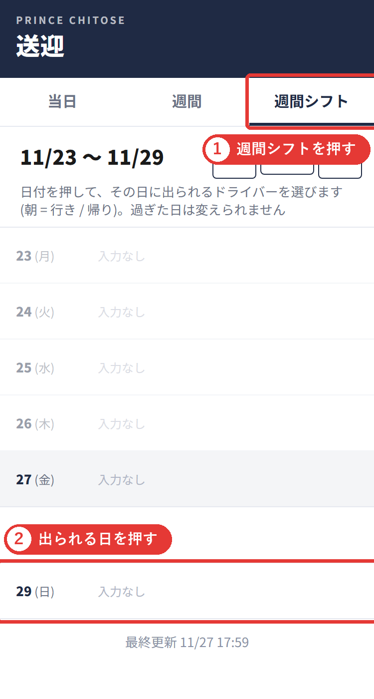
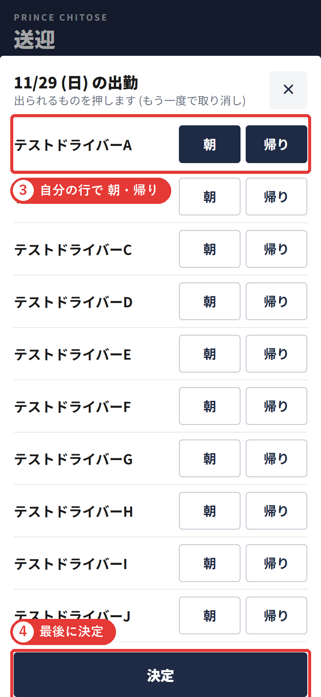
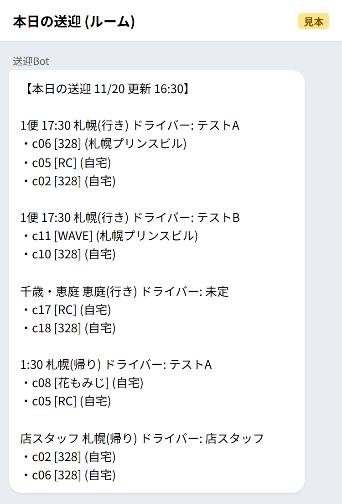
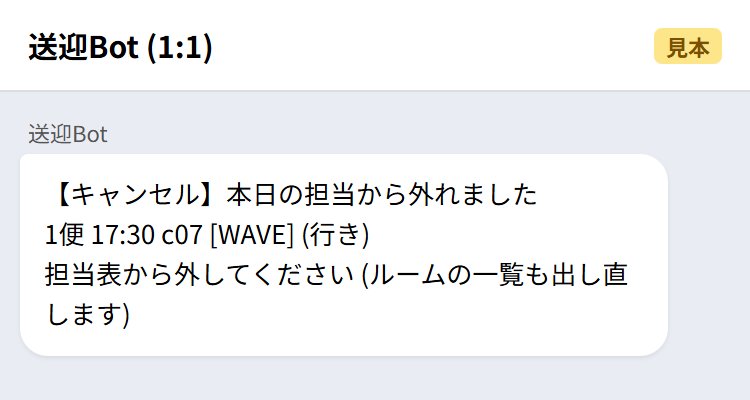
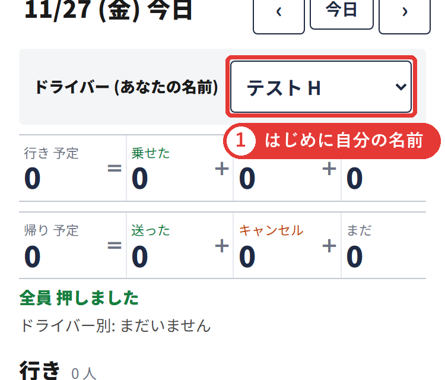
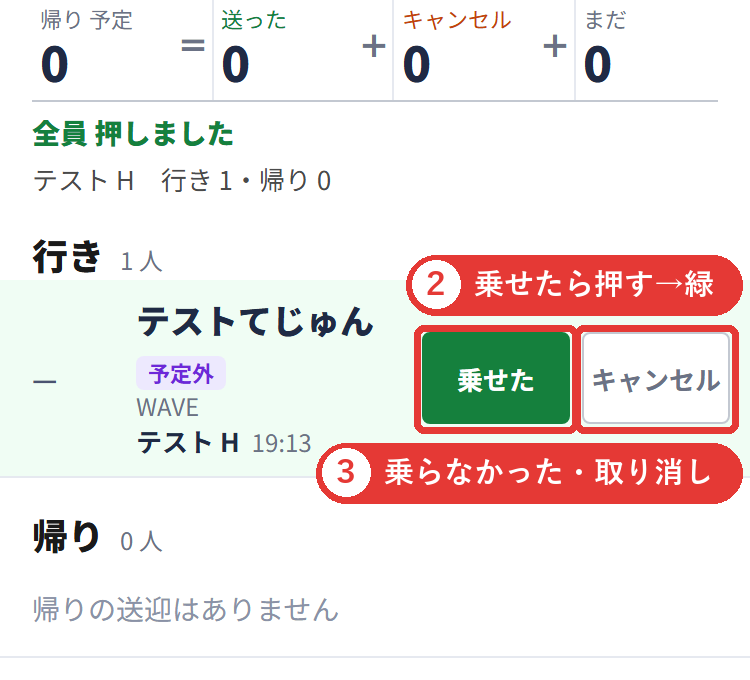
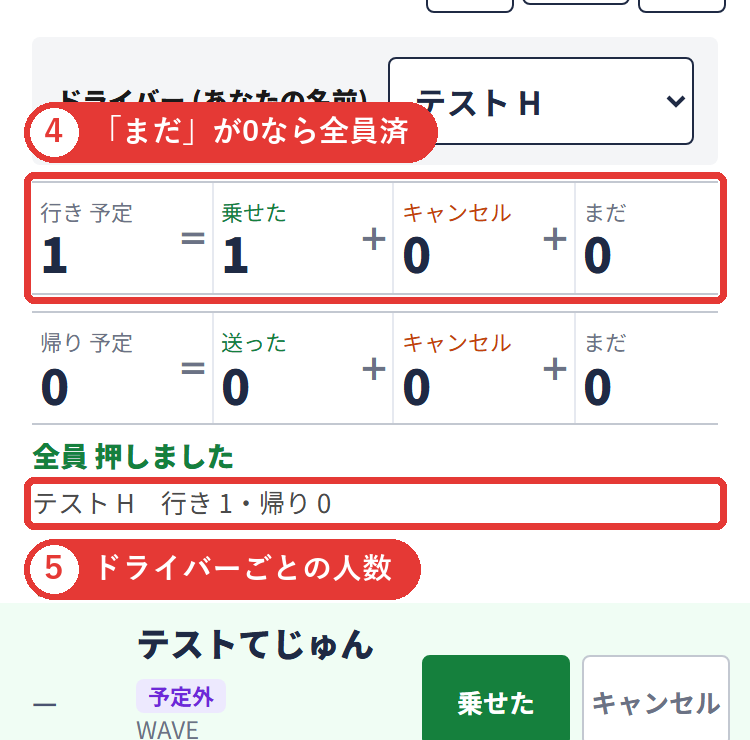
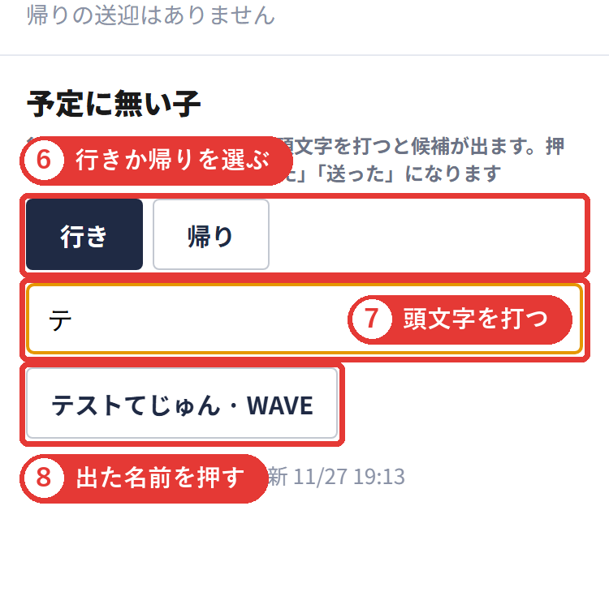

全体の流れ
- 1送迎シフトを 入れる
出られる日の「朝」「帰り」を押して、「決定」。→ くわしく
- 2LINE WORKS アプリを 入れる
スマホに アプリを 入れるだけ。自分で 登録は しません。→ くわしく
- 3お店からの 招待リンク を 待つ
届いたら 押して 参加します。
- 4毎日 送迎の 指示が 届く
毎日 16:30 に、その日の 出勤と 送迎の 希望を もとに 割り振って、LINE WORKS に 届きます。→ くわしく
- 5当日: 行き・帰りの 送迎
便・時刻・乗る場所を 見て、送迎します。乗せたら 画面で「乗せた」を 押します。→ くわしく
1 送迎シフトを 入れる
お店から届いた リンクで 開きます。
https://apply.prince-sapporo.jp/sougei-board/ の「週間シフト」タブです。鍵は いりません。


2 LINE WORKS を 入れる
送迎の連絡は LINE WORKS という アプリに 届きます。LINE とは 別の アプリです。
- 1アプリを 入れる
iPhone は「App Store」、Android は「Google Play」で 「LINE WORKS」 を さがして 入れます。
入れたあと、アプリを 開いて 自分で 登録・ログインは しません。
- 2自分で アカウントを 作らない
「新規登録」「アカウント作成」は 押さないで ください。
自分で 作ると、お店とは 別の アカウントに なって、お店からの 連絡が 届かなくなります。
- 3お店からの 招待リンク を 待つ
お店の人が、あなたの スマホに 招待リンク (または QR) を 送ります。届くまで 待ちます。
届いた→ 次へまだ 届かない→ お店の人に 聞く。自分で 登録は しない - 4リンクを 押して 参加する
リンクを 押して、画面の 案内どおりに 進みます。携帯電話の 認証と、暗証番号の 設定が あります。
確認中 招待の 画面が どう 見えるかは、まだ 実際の スマホで 確かめて いません。分かりしだい 写真つきで 直します。
- 5参加できたら 完了
お店の 「送迎」の ルーム と「送迎Bot」が 見えます。指示は ここに 届きます。
3 参加したあと 届く 指示
1 日の 流れ
- 1前もって: 出られる日を 入れる
送迎シフトに「朝」「帰り」を 入れて「決定」。
- 215:00 ごろ: お店が 確認
その日の ドライバーが 入っていないと、お店の 管理者へ 注意が いきます。
- 316:30: 自動で 割り振る
その日の 出勤と 送迎の 希望を 読んで、だれを どの車に 乗せるか 決め、LINE WORKS に 送ります。
- 4届いた 指示を 見る
下の「見方」を 見て、便・時刻・乗る場所を 確かめます。
- 5行き・帰りの 送迎
行きは 便の 時刻に 乗る場所へ。帰りは 帰りの 時刻に お迎えへ。
自宅への お迎えの 時刻は、お店の人が 決めて 入れます。 - 6変わったら 知らせが 届く
16:30 の あとに 変わった時は、「担当の 変更」「キャンセル」が 届きます。
届く 3 つの 連絡


赤い丸の 1 つ目 … 便・出発の 時刻・乗る 順番・[店]・行き/帰り
2 つ目 … 乗る 場所 3 つ目 … 住所
「c06」は 見本の 記号で、本番は 源氏名が 入ります。「1便 17:30」は、1 回目の 17:30 の 便、という 意味です。見本

返事の しかた
4 当日 乗せたら 押す
送迎の ページ (https://apply.prince-sapporo.jp/sougei-board/) の「当日」タブで 使います。鍵は いりません。
ボタンを 1 回 押すと ON (色が つく)、もう 1 回 押すと OFF (白に もどる)。
緑 = 乗せた (帰りは 送った) オレンジ = キャンセル


押し間違えたら、同じ ボタンを もう一度 押すと 消えます (OFF)。

